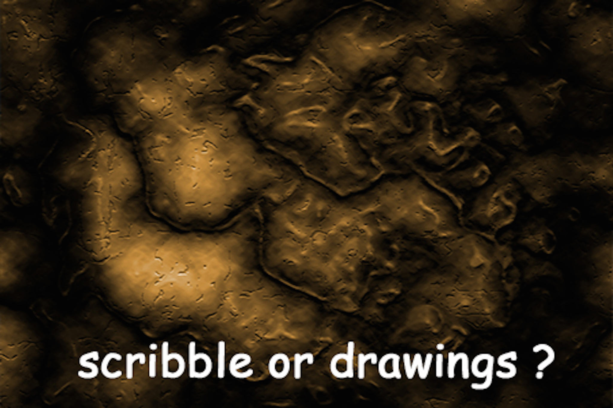

When we speak of drawing as an art form, we are referring mainly to an artist's use of line to make a picture. However, the definition of drawing can be expanded to include the use of color, shading, and other elements in addition to line.
Drawings can be made as finished works of art. But they are also made for other reasons. One of the first main functions of drawing has been as a first step in the preparation of a work of art in another medium. These mediums include painting, sculpture, or architecture. The study of drawing has also served as the basic form of training for work in all of the arts.
The history of drawing is as old as the history of humankind. People drew pictures even before they learned how to write. Like other art forms, drawing has changed and developed through history. Each new style grew out of the style that came before it. This evolution of drawing styles closely parallels the development of painting. As drawing styles changed, so did drawing materials.

The earliest known drawings date from 30,000 to 10,000 B.C.. They were found on the walls of caves in France and Spain. Other examples of early drawing are designs that were scratched, carved, or painted on the surfaces of primitive tools.